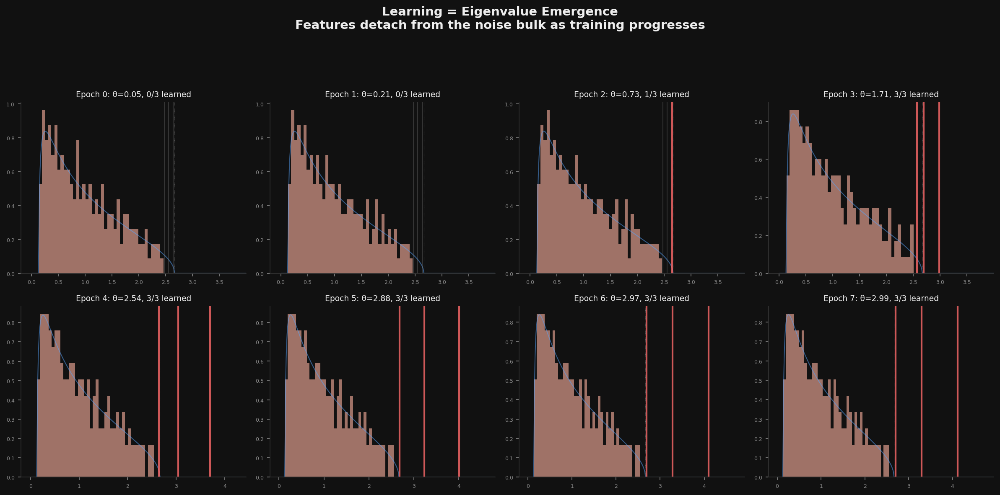
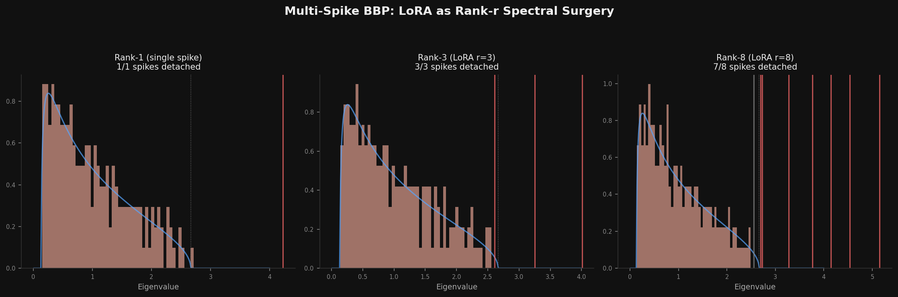

There's a phase transition buried inside every neural network. Not a metaphorical one. A real, sharp, mathematically precise phase transition that determines whether a network has learned anything at all.
It's called the BBP transition, after Baik, Ben Arous, and Péché, and it says something startlingly clean: a signal embedded in noise is either completely invisible or clearly detectable, with almost nothing in between.
Start with a random matrix. Its eigenvalue spectrum follows the Marchenko-Pastur distribution — a smooth, featureless bulk. This is what neural network weights look like at initialization: pure noise, no structure, no information.
Now add a small signal. A rank-1 perturbation: one direction in weight space that "means something." If the signal is weak, nothing visible happens. The top eigenvalue stays glued to the edge of the bulk. The signal is there, physically present in the matrix, but statistically invisible.
Increase the signal strength past a critical threshold θc, and something dramatic happens: the top eigenvalue detaches from the bulk. It pops out, clearly separated, unambiguously signal rather than noise. The feature has been "learned."
where σ is the noise level and γ = p/n is the aspect ratio of the weight matrix. That's it. Below this threshold: invisible. Above: detectable. The transition is sharp.
I ran the simulation for a matrix with three hidden "features" of different strengths, watching the spectrum evolve as the signal grows (mimicking training):

Epoch 0-1: all three features are buried. Pure Marchenko-Pastur. The network knows nothing.
Epoch 2: the strongest feature detaches. One red line pops out of the bulk. The network has learned one thing.
Epoch 3: all three detach. The network now "sees" all its features. The bulk stays featureless — it's still noise — but the outliers carry all the information.
A rank-r LoRA update adds exactly r spikes to a weight matrix's spectrum. This reframes fine-tuning as a spectral question: you're injecting r directions into weight space and hoping each one has enough strength to cross the BBP threshold.

But not all r dimensions are equal. In the rank-8 case above (right panel), seven spikes detach but the weakest one (strength 0.5, below θc = 0.63) stays buried. That rank dimension is wasted — the network literally cannot see it.
This gives a concrete prediction: effective LoRA rank ≤ nominal rank. You can measure it by counting how many eigenvalues of the LoRA update matrix exceed the BBP threshold for the target layer. If your rank-16 update only has 8 spikes above threshold, you'd get the same result with rank-8.
This slots into a pattern I keep finding. The information bottleneck predicts that compression discards irrelevant features first — which is exactly the BBP ordering (weakest spikes get lost first). The Koopman spectral theory says dynamical systems have slow modes that commit first — which is eigenvalue detachment by another name. The four roads all point to the same thing: relevant structure emerges as spectral separation from noise.
Even the constrained decoding phase transition connects. Fine-tuning for structured output needs to push structural token modes past a threshold — the grammar's analog of BBP. Below threshold: the model can't reliably produce valid syntax. Above: it can. The transition is sharp in both cases.
It's the sharpness. Not "gradually learning" but "suddenly seeing." The signal is there the whole time, growing slowly, and then — snap — it's visible. The eigenvalue detaches. The feature exists.
And the threshold is universal. It doesn't depend on what the signal means, what the network is doing, what task it's solving. It depends only on the noise level and the matrix shape. The physics of learning is simpler than the content of learning.
There's something Platonic about it. The features were always there, in some sense. The transition isn't the signal appearing — it's the signal becoming distinguishable from the noise. Learning isn't creation. It's recognition.